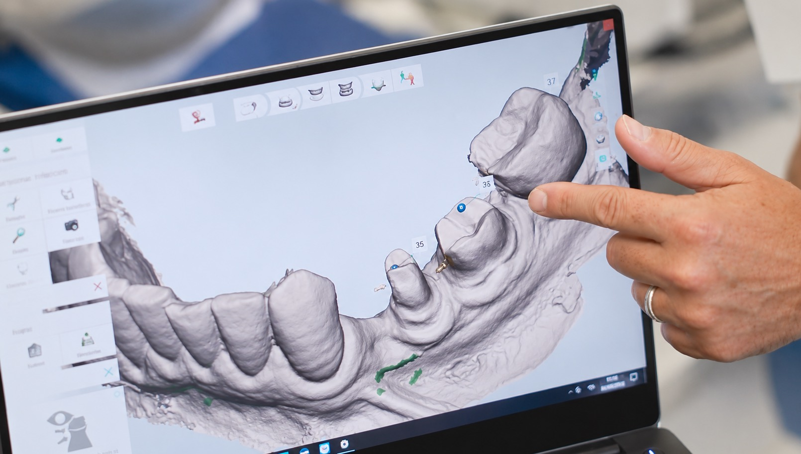

Il nome Bertato Dental Family è stato scelto per rappresentare in modo chiaro e immediato la filosofia e i valori fondanti del nostro studio dentistico. L’obiettivo principale è quello di creare un ambiente accogliente, sereno e professionale, in cui ogni paziente — dal bambino all’adulto, fino all’anziano — possa sentirsi parte di una “famiglia del sorriso”.
